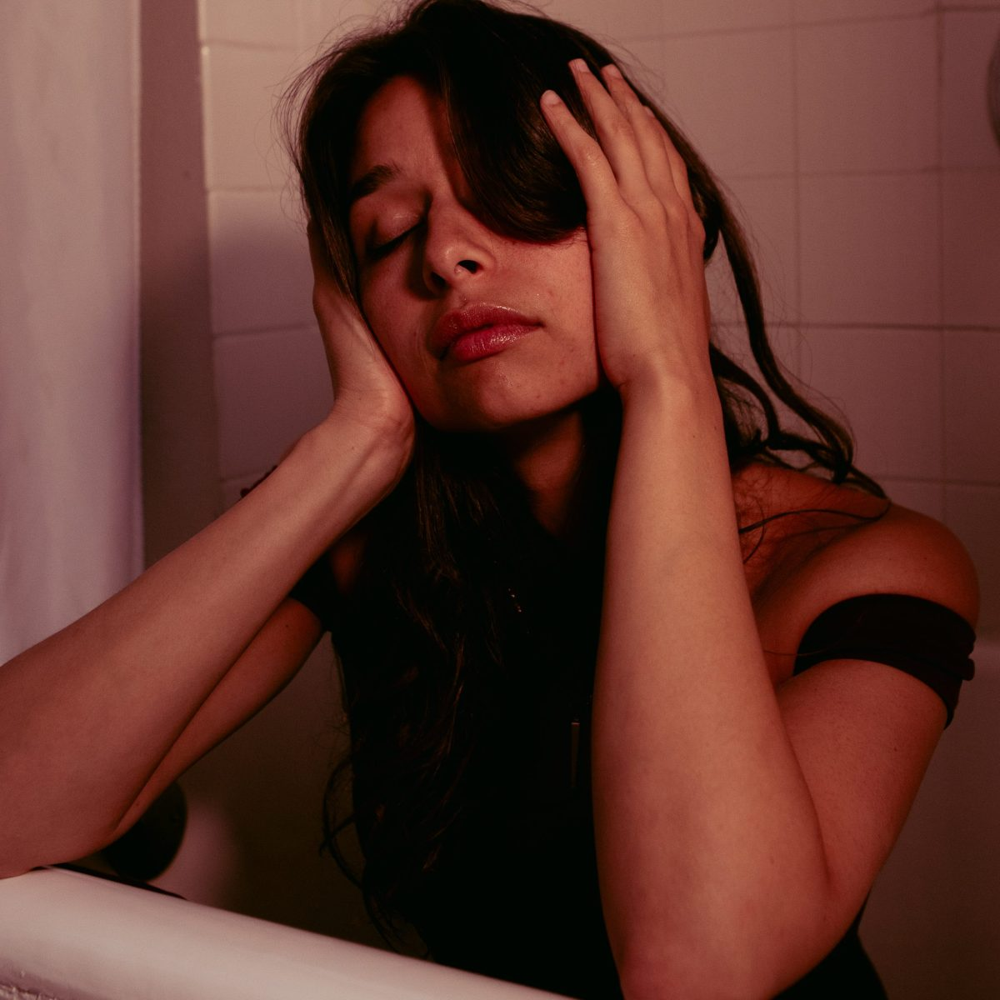

About Adana
Adana is a singer-songwriter whose work moves between intimacy and depth, blending soulful vocals with emotionally resonant songwriting. Her music explores themes of connection, transformation, longing, and self-truth — crafted with restraint, honesty, and a refined sense of atmosphere.
Rooted in lived experience rather than performance for effect, Adana's sound is both grounded and expansive, drawing listeners inward rather than asking for attention. Her songs carry a quiet intensity, pairing melodic sensitivity with lyrics that linger long after the music ends.
Whether performing in Spanish or English, live or releasing recorded work, Adana creates spaces where emotion is felt rather than explained. Her artistry reflects a commitment to authenticity, presence, and emotional clarity — inviting listeners into moments that feel personal, timeless, and deeply human.
Short bio: Singer-songwriter based in San Diego, California; releases music independently.
At a glance
Venues played
- MusicBox, San Diego
- THC, San Diego
- SOFAR, San Diego
- BNS, Santee
- Mazatlán, Mexico
{kind=link}
{kind=link}
{kind=link}
{kind=link}
{kind=link}